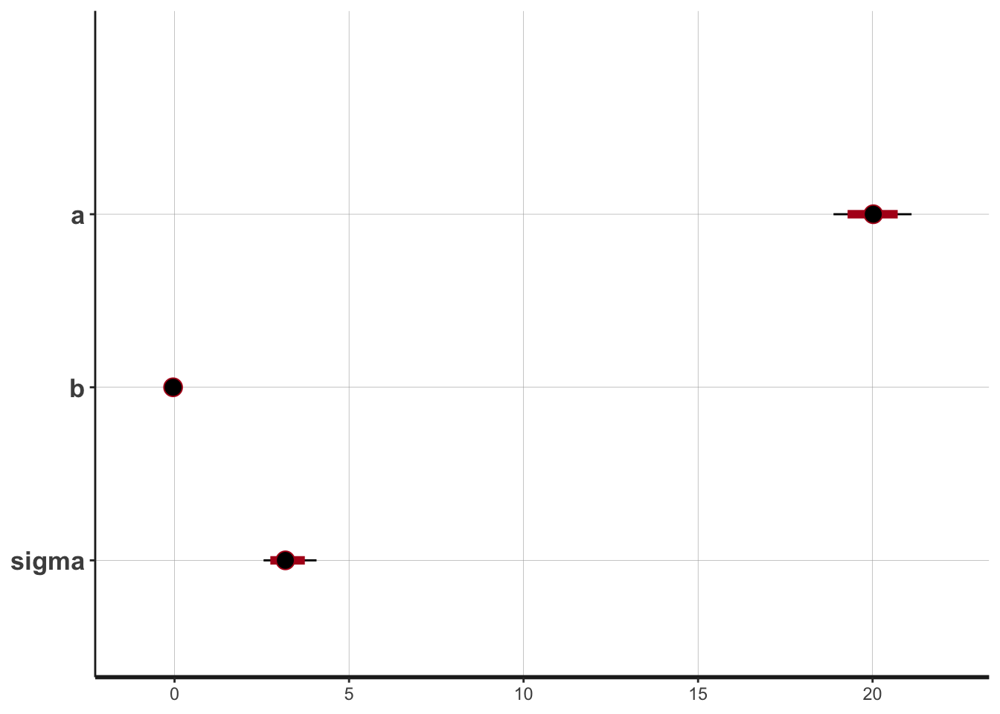

Chapter 6 rstan
6.1 Resources
6.2 Description
All of the packages in the previous chapters are running stan under the hood. One of the biggest advantages to using rstan (or cmdstanr) is you get the full power and flexibility of stan so you can build models that aren’t supported by the other packages. The tradeoff is syntax is quite different which can be a challenge for those who are only familiar with R.
6.3 Environment Setup
rm(list=ls())
set.seed(123)
options("scipen" = 1, "digits" = 4)
library(tidyverse)
library(datasets)
data(mtcars)
library(rstan)
library(bayesplot)
# Saves compiled version of model so it only has to be recompiled if the model is changed
rstan_options(auto_write = TRUE)
# Set number of cores
options(mc.cores = parallel::detectCores()-1)6.4 Linear Model
6.4.1 Define Model
Like the rethinking package, rstan doesn’t have default priors, so I need to explicitly choose them:
\[\begin{align*} mpg &\sim N(\mu, \sigma^2) \\ \mu &= a + b*disp \\ a &\sim N(25,10) \\ b &\sim N(-0.2, 0.1) \\ \sigma &\sim Exp(1) \end{align*}\]
For a simple linear model there are three sections to the model definition:
data- This is where the data structures for the known/observed portions of the model (e.g., the number of observations, the number and type of predictors) are defined.parameters- This is where the data structures for the parameters to be estimated are defined. For example, the coefficients of the simple linear model belong in this section.model- This is where the model (including priors) is defined using the data structures from the previous sections.
# Define model
mdl_code <- '
data{
int<lower=1> N;
vector[N] mpg;
vector[N] disp;
}
parameters{
real a;
real b;
real<lower=0.0> sigma;
}
model{
// Likelihood
mpg ~ normal(a + b * disp, sigma);
// Priors
a ~ normal(25, 10);
b ~ normal(-0.2, 0.1);
sigma ~ exponential(1);
}
'A couple of comments about the model definition.
For those only familiar with R, it may seem like a lot of extra “stuff” is going on in the
dataandparameterssections. This is becausestanis written in C++ which is statically typed, unlike R and Python which are dynamically typed. Essentially what that means is you must define the type of any variable before you use it.The
lower=(andupper=not shown in this example) options define bounds for a variable. The data is checked against the bounds which can detect errors pre-compilation. Generally, bounds are a good idea but aren’t required.
Next, populate the data structures from the data section and save in a list.
And this is the call to fit the model.
## Trying to compile a simple C file6.4.2 Prior Predictive Distribution
I could manually construct the prior predictive distribution like I did in 4.4.2. Instead I’ll have stan generate the prior predictive distribution which will be useful for more complex models. First, create another model with just the data and generated quantities section. The generated quantities section mirrors the model section except it is now drawing samples from the priors without conditioning on the observed data. Also, in the stan call set the sampling algorithm for fixed parameters.
# Plot prior predictive distribution
mdl_prior <- '
data{
int<lower=1> N;
vector[N] disp;
}
generated quantities{
real a_sim = normal_rng(25, 10);
real b_sim = uniform_rng(-0.1, 0.0);
real sigma_sim = exponential_rng(0.2);
real mpg_sim[N] = normal_rng(a_sim + b_sim * disp, sigma_sim);
}
'
N<- 50
D <- seq(min(mtcars$disp), max(mtcars$disp), length.out = N)
mdl_data_prior <- list(N = N, disp=D)
mdl_prior <- stan(model_code=mdl_prior, data=mdl_data_prior, model_name="mdl_prior",
chains=1, algorithm="Fixed_param")## Trying to compile a simple C filedraws <- as.data.frame(mdl_prior) %>%
head(100)
# Expected value prior predictive distribution
exp_mpg_sim <- apply(draws, 1, function(x) x["a_sim"] + x["b_sim"]*D) %>%
as.data.frame() %>%
mutate(disp = D) %>%
pivot_longer(-c("disp"), names_to="iter", values_to="mpg")
ggplot() +
geom_line(data=exp_mpg_sim, mapping=aes(x=disp, y=mpg, group=iter), alpha=0.2) 
6.4.3 Diagnostics
## Inference for Stan model: mdl1.
## 4 chains, each with iter=2000; warmup=1000; thin=1;
## post-warmup draws per chain=1000, total post-warmup draws=4000.
##
## mean se_mean sd 2.5% 25% 50% 75% 97.5% n_eff Rhat
## a 29.58 0.03 1.21 27.17 28.80 29.56 30.39 31.93 1394 1
## b -0.04 0.00 0.00 -0.05 -0.04 -0.04 -0.04 -0.03 1444 1
## sigma 3.19 0.01 0.40 2.53 2.92 3.15 3.41 4.07 1553 1
## lp__ -57.58 0.04 1.28 -60.90 -58.16 -57.23 -56.64 -56.15 1298 1
##
## Samples were drawn using NUTS(diag_e) at Tue Dec 8 13:58:47 2020.
## For each parameter, n_eff is a crude measure of effective sample size,
## and Rhat is the potential scale reduction factor on split chains (at
## convergence, Rhat=1).6.4.4 Posterior Distribution
The print function above displays information about the posterior distributions in addition to n_eff. Alternatively, the plot function provides a graphical display of the posterior distributions.
## ci_level: 0.89 (89% intervals)## outer_level: 0.95 (95% intervals)
6.4.5 Posterior Predictive Distribution
Using the posterior samples, I can plot the expected value of the posterior predictive distribution.
N<- 50
D <- seq(min(mtcars$disp), max(mtcars$disp), length.out = N)
draws <- as.data.frame(mdl1) %>%
head(100)
# Expected value posterior predictive distribution
post_pred <- apply(draws, 1, function(x) x["a"] + x["b"]*D) %>%
as.data.frame() %>%
mutate(disp = D) %>%
pivot_longer(-c("disp"), names_to="iter", values_to="mpg")
ggplot() +
geom_line(data=post_pred, mapping=aes(x=disp, y=mpg, group=iter), alpha=0.2) +
geom_point(data=mtcars, mapping=aes(x=disp, y=mpg, color=factor(cyl)))
Note that the expected value of the ppd doesn’t include \(\sigma\).
An alternative is to have stan automatically generate samples from the posterior predictive distribution by adding a generated quantities section to the model (similar to what I did for the prior predictive distribution).
# Define model
mdl_code_ppd <- '
data{
int<lower=1> N;
vector[N] mpg;
vector[N] disp;
}
parameters{
real a;
real<lower=-0.1, upper=0.0> b;
real<lower=0.0> sigma;
}
transformed parameters{
vector[N] Y_hat = a + b * disp;
}
model{
// Likelihood
mpg ~ normal(Y_hat, sigma);
// Priors
a ~ normal(25, 10);
b ~ uniform(-0.1, 0.0);
sigma ~ exponential(0.2);
}
generated quantities{
// Posterior Predictive
real mpg_ppd[N] = normal_rng(Y_hat, sigma);
}
'
# Fit model
mdl1_ppd <- stan(model_code=mdl_code_ppd, data=mdl_data)## Trying to compile a simple C filedraws <- as.data.frame(mdl1_ppd)
# 95% credible interval for expected value of ppd
Eppd <- draws %>% select(starts_with("Y_hat")) %>%
apply(2, function(x) quantile(x, probs=c(0.025, 0.5, 0.975))) %>%
t() %>%
as.data.frame() %>%
mutate(disp = mtcars$disp)
# 95 credible interval for ppd
ppd <- draws %>% select(starts_with("mpg_ppd")) %>%
apply(2, function(x) quantile(x, probs=c(0.025, 0.5, 0.975))) %>%
t() %>%
as.data.frame() %>%
mutate(disp=mdl_data$disp)
ggplot() +
geom_line(data=Eppd, mapping=aes(x=disp, y=`50%`)) +
geom_ribbon(data=ppd, mapping=aes(x=disp, ymin=`2.5%`, ymax=`97.5%`),
alpha=0.5, fill="lightblue") +
geom_ribbon(data=Eppd, mapping=aes(x=disp, ymin=`2.5%`, ymax=`97.5%`),
alpha=0.5, fill="dodgerblue") +
geom_point(data=mtcars, mapping=aes(x=disp, y=mpg)) +
labs(x="disp", y="mpg")
The darker blue area is a 95% credible interval for the expected value of the posterior predictive distribution and the lighter blue area is the 95% credible interval for the posterior predictive distribution.
6.5 Semi-parametric Model
6.5.1 Define Model
First, I’ll define the splines just as I did with the rethinking package.
library(splines)
num_knots <- 4 # number of interior knots
knot_list <- quantile(mtcars$disp, probs=seq(0,1,length.out = num_knots))
B <- bs(mtcars$disp, knots=knot_list[-c(1,num_knots)], intercept=TRUE)
df1 <- cbind(disp=mtcars$disp, B) %>%
as.data.frame() %>%
pivot_longer(-disp, names_to="spline", values_to="val")
# Plot at smaller intervals so curves are smooth
N<- 50
D <- seq(min(mtcars$disp), max(mtcars$disp), length.out = N)
B_plot <- bs(D,
knots=knot_list[-c(1,num_knots)],
intercept=TRUE)
df2 <- cbind(disp=D, B_plot) %>%
as.data.frame() %>%
pivot_longer(-disp, names_to="spline", values_to="val")
ggplot(mapping=aes(x=disp, y=val, color=spline)) +
geom_point(data=df1) +
geom_line(data=df2, linetype="dashed")
Note: the dashed lines are the splines and the points are the values of the spline at the specific values of mtcars$disp; the points are inputs into the stan model.
# Define model
mdl_code <- '
data{
int<lower=1> N;
int<lower=1> num_basis;
vector[N] mpg;
vector[N] disp;
matrix[N, num_basis] B;
}
parameters{
real a;
real<lower=0.0> sigma;
vector[num_basis] w;
}
transformed parameters{
vector[N] Y_hat = a + B*w;
}
model{
// Likelihood
mpg ~ normal(Y_hat, sigma);
// Priors
a ~ normal(25, 10);
sigma ~ exponential(0.2);
w ~ normal(0, 5);
}
generated quantities{
// Posterior Predictive
real mpg_ppd[N] = normal_rng(Y_hat, sigma);
}
'
mdl_data <- list(N=nrow(mtcars),
num_basis=ncol(B),
B=B,
mpg = mtcars$mpg,
disp = mtcars$disp)
# Fit model
mdl1_gam <- stan(model_code=mdl_code, data=mdl_data)## Trying to compile a simple C file6.5.2 Prior Predictive Distribution
# Define model
mdl2 <- '
data{
int<lower=1> N;
int<lower=1> num_basis;
//vector[N] mpg;
//vector[N] disp;
matrix[N, num_basis] B;
}
generated quantities{
real a_sim = normal_rng(25, 10);
real sigma_sim = exponential_rng(0.2);
real mpg_sim[N];
vector[N] Y_hat;
vector[num_basis] w_sim;
for (i in 1:num_basis)
w_sim[i] = normal_rng(0,5);
Y_hat = a_sim + B * w_sim;
mpg_sim = normal_rng(Y_hat, sigma_sim);
}
'
mdl_gam_prior <- stan(model_code=mdl2,
data=list(N=N,
num_basis=ncol(B_plot),
B=B_plot),
chains=1, algorithm="Fixed_param")## Trying to compile a simple C filedraws <- as.data.frame(mdl_gam_prior) %>%
head(50)
# Expected value prior predictive distribution
exp_mpg_sim <- apply(draws, 1, function(x) {
x["a_sim"] + B_plot %*% x[grepl("w", names(x))]
}) %>%
as.data.frame() %>%
mutate(disp = D) %>%
pivot_longer(-c("disp"), names_to="iter", values_to="mpg")
# 95% interval prior predictive distribution
mpg_sim <- as.data.frame(mdl_gam_prior) %>% select(starts_with("mpg")) %>%
apply(2, function(x) quantile(x, probs=c(0.025, 0.5, 0.975))) %>%
t() %>%
as.data.frame() %>%
mutate(disp = D)
ggplot() +
geom_line(data=exp_mpg_sim, mapping=aes(x=disp, y=mpg, group=iter), alpha=0.2) +
geom_ribbon(data=mpg_sim, mapping=aes(x=disp, ymin=`2.5%`, ymax=`97.5%`),
alpha=0.5, fill="lightblue")
6.5.3 Diagnostics
# Note that bayesplot methods support tidy selection of parameters
mcmc_rank_overlay(mdl1_gam, pars=vars(a, sigma, starts_with("w")))
# This is the print.stanfit method and pars must be a character vector
print(mdl1_gam, pars=c("a", "sigma", "w"))## Inference for Stan model: 7ae6bef6fd6e1ad16f99577e64710ecd.
## 4 chains, each with iter=2000; warmup=1000; thin=1;
## post-warmup draws per chain=1000, total post-warmup draws=4000.
##
## mean se_mean sd 2.5% 25% 50% 75% 97.5% n_eff Rhat
## a 20.23 0.07 2.05 16.31 18.84 20.22 21.61 24.31 954 1
## sigma 2.32 0.01 0.34 1.77 2.07 2.27 2.52 3.12 2290 1
## w[1] 11.82 0.07 2.39 7.06 10.20 11.80 13.42 16.49 1215 1
## w[2] 4.31 0.08 2.76 -1.22 2.45 4.34 6.19 9.73 1263 1
## w[3] -0.61 0.08 2.88 -6.09 -2.58 -0.63 1.32 5.05 1451 1
## w[4] -5.67 0.08 3.10 -11.84 -7.78 -5.62 -3.58 0.46 1359 1
## w[5] -2.39 0.08 2.99 -8.41 -4.41 -2.33 -0.38 3.46 1567 1
## w[6] -8.79 0.07 2.54 -13.63 -10.55 -8.80 -7.08 -3.70 1339 1
##
## Samples were drawn using NUTS(diag_e) at Tue Dec 8 14:00:36 2020.
## For each parameter, n_eff is a crude measure of effective sample size,
## and Rhat is the potential scale reduction factor on split chains (at
## convergence, Rhat=1).6.5.4 Posterior Distribution
## ci_level: 0.8 (80% intervals)## outer_level: 0.95 (95% intervals)
6.5.5 Posterior Predictive Distribution
# 95% credible interval expected value of posterior predictive
Eppd <- as.data.frame(mdl1_gam) %>% select(starts_with("Y_hat")) %>%
apply(2, function(x) quantile(x, probs=c(0.025, 0.5, 0.975))) %>%
t() %>%
as.data.frame() %>%
mutate(disp = mtcars$disp)
# 95% credible interval posterior predictive
ppd <- as.data.frame(mdl1_gam) %>% select(starts_with("mpg")) %>%
apply(2, function(x) quantile(x, probs=c(0.025, 0.5, 0.975))) %>%
t() %>%
as.data.frame() %>%
mutate(disp = mtcars$disp)
ggplot() +
geom_line(data=Eppd, mapping=aes(x=disp, y=`50%`)) +
geom_ribbon(data=ppd,
mapping=aes(x=disp, ymin=`2.5%`, ymax=`97.5%`),
alpha=0.5, fill="lightblue") +
geom_ribbon(data=Eppd, mapping=aes(x=disp, ymin=`2.5%`, ymax=`97.5%`),
alpha=0.5, fill="dodgerblue") +
geom_point(data=mtcars, mapping=aes(x=disp, y=mpg)) +
labs(x="disp", y="mpg")
6.6 Semi-parametric Model (Random Walk Prior)
6.6.1 Define Model
6.6.2 Prior Predictive Distribution
6.6.3 Diagnostics
6.6.4 Posterior Distribution
6.6.5 Posterior Predictive Distribution
6.7 Session Info
## R version 4.0.3 (2020-10-10)
## Platform: x86_64-apple-darwin17.0 (64-bit)
## Running under: macOS Big Sur 10.16
##
## Matrix products: default
## BLAS: /Library/Frameworks/R.framework/Versions/4.0/Resources/lib/libRblas.dylib
## LAPACK: /Library/Frameworks/R.framework/Versions/4.0/Resources/lib/libRlapack.dylib
##
## locale:
## [1] en_US.UTF-8/en_US.UTF-8/en_US.UTF-8/C/en_US.UTF-8/en_US.UTF-8
##
## attached base packages:
## [1] splines stats graphics grDevices datasets utils methods
## [8] base
##
## other attached packages:
## [1] bayesplot_1.7.2 rstan_2.21.2 StanHeaders_2.21.0-6
## [4] forcats_0.5.0 stringr_1.4.0 dplyr_1.0.2
## [7] purrr_0.3.4 readr_1.4.0 tidyr_1.1.2
## [10] tibble_3.0.4 ggplot2_3.3.2 tidyverse_1.3.0
##
## loaded via a namespace (and not attached):
## [1] httr_1.4.2 jsonlite_1.7.1 modelr_0.1.8 RcppParallel_5.0.2
## [5] assertthat_0.2.1 stats4_4.0.3 renv_0.12.0 cellranger_1.1.0
## [9] yaml_2.2.1 pillar_1.4.7 backports_1.2.0 glue_1.4.2
## [13] digest_0.6.27 rvest_0.3.6 colorspace_2.0-0 htmltools_0.5.0
## [17] plyr_1.8.6 pkgconfig_2.0.3 broom_0.7.2 haven_2.3.1
## [21] bookdown_0.21 scales_1.1.1 processx_3.4.5 farver_2.0.3
## [25] generics_0.1.0 ellipsis_0.3.1 withr_2.3.0 cli_2.2.0
## [29] magrittr_2.0.1 crayon_1.3.4 readxl_1.3.1 evaluate_0.14
## [33] ps_1.4.0 fs_1.5.0 fansi_0.4.1 xml2_1.3.2
## [37] pkgbuild_1.1.0 tools_4.0.3 loo_2.3.1 prettyunits_1.1.1
## [41] hms_0.5.3 lifecycle_0.2.0 matrixStats_0.57.0 V8_3.4.0
## [45] munsell_0.5.0 reprex_0.3.0 callr_3.5.1 compiler_4.0.3
## [49] rlang_0.4.9 grid_4.0.3 ggridges_0.5.2 rstudioapi_0.13
## [53] labeling_0.4.2 rmarkdown_2.5 gtable_0.3.0 codetools_0.2-16
## [57] inline_0.3.17 DBI_1.1.0 curl_4.3 reshape2_1.4.4
## [61] R6_2.5.0 gridExtra_2.3 lubridate_1.7.9.2 knitr_1.30
## [65] stringi_1.5.3 parallel_4.0.3 Rcpp_1.0.5 vctrs_0.3.5
## [69] dbplyr_2.0.0 tidyselect_1.1.0 xfun_0.19